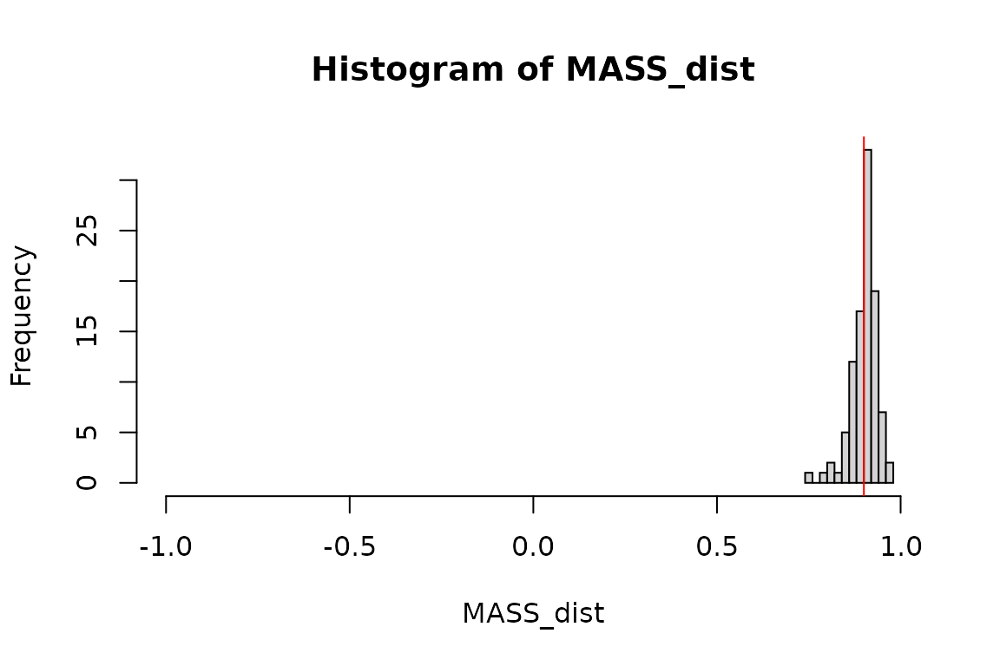

Exploring methods to create a multivariate t-distributed random matrix
Paul W. Egeler, MS, GStat
2020-10-06
Source:vignettes/mvrt.Rmd
mvrt.RmdThis document is part of the the mvrt package. See the README.md for more information on download and installation.
Objective
The objective of this R package vignette is to investigate the various ways of creating multivariate normal/t distributions. An algorithm using Cholesky decomposition is used; first in R code, then in C++ code. This is compared to existing methods for creating multivariate random matrices, such as MASS::mvrnorm and mvtnorm::rmvt.
The matrices are compared using summary statistics and graphics (histograms). The distributions are assessed for “believability”. Methods are also explored for ensuring that the specified correlation/covariance structure is preserved, despite the random process of number generation. Finally, benchmarking is perfromed to determine performance differences.
Setup
Defining the data
We will specify the sample n pairs, means, correlation matrix, and variances. The correlation matrix and variances will be used to generate a covariance matrix, which will be used by the random number generator.
n <- 30 mu <- c(5,4) R <- matrix(c(1,.9,.9,1),2,2) var <- c(2.5,2) S <- mvrt::convert_R2S(R, var)
Defining the multivariate t-distributed random matrix generator functions
First we will define the random number generator functions in R. We will compare the performance of R code with- and without for loops. Well-optimized R code may be sufficiently performant as to not warrant the implementation of a compiled alternative.
# With a for loop mvrt_R_a <- function(n, mu, S, df = n - 1) { g.t <- t(chol(S)) bivMat <- matrix(0,nrow = length(mu), ncol = n) for (i in seq_len(n)) { bivMat[,i] <- mu + g.t %*% rt(length(mu), df) } t(bivMat) } # Without a for loop mvrt_R_b <- function(n, mu, S, df = n - 1) { g <- chol(S) random_matrix <- matrix(rt(n*length(mu), df),nrow = length(mu)) deviation <- t(g) %*% random_matrix t(mu + deviation) }
Compiling and loading the C++ mvrt random matrix generator
Next we will load in a function written in C++. The expectation is that the C++ code will be faster than the R code, possibly by several orders of magnitude.
Rcpp::sourceCpp("../src/mvrt.cpp")
The code that was loaded is below.
#include <RcppArmadillo.h>
// [[Rcpp::depends(RcppArmadillo)]]
using namespace Rcpp;
//' @rdname mvrt
//' @export
// [[Rcpp::export]]
arma::mat mvrt(int n, arma::vec mu, arma::mat S, int df=1)
{
// Cholesky decomp and transpose covariance matrix
arma::mat g = chol(S).t();
// Generate the random data
auto x_vec = rt(mu.size() * n, df);
arma::mat x = arma::mat(&x_vec[0], mu.size(), n, false, true);
// Give the random data covariance structure and add mean offset
x = g * x;
x.each_col() += mu;
return x.t();
}Define our function for getting a distribution of correlation coefficients
This function will take a function and its arguments and run it a specified number of times, performing a correlation on the output and extracting the off-diagonal element. Essentially, we can use this to run each random number generator an arbitrary number of times and get the Pearson’s correlation for each pair of vectors created. This can be used to examine the distribution of correlation coefficients that can be expected from the random generation processes. Note the random seed parameter which can be set for reproducibility.
Analysis
Checking the algorithm
Homogenous outputs
First let’s check that our three home-grown functions produce identical results.
if (identical(mvrtRa_dist, mvrt_dist) && identical(mvrtRb_dist, mvrt_dist)) { message("Distributions of correlation coefficients are identical") } else { message("Distributions of correlation coefficients are NOT identical") }
## Distributions of correlation coefficients are NOT identicalif ( identical( (mvrt_sample <- {set.seed(999); mvrt(n, mu, S, n - 1)}), {set.seed(999); mvrt_R_a(n, mu, S)} ) && identical( mvrt_sample, {set.seed(999); mvrt_R_b(n, mu, S)} ) ) { message("Random samples generated match") } else { message("Random samples generated do NOT match") }
## Random samples generated do NOT matchIt appears that we are successful in that the three functions produce identical output. Therefore, we must only examine one function’s output when doing distribution analysis, rather than all three.
Inspecting outputted means and variances
Let’s run a couple of checks to make sure that the algorithm is at least giving us data with approximately correct means and variances.
## [1] 4.943320 3.951612## [1] 2.607499 2.103790Means are close and variances are just a little higher than those specified in the covariance matrix, which we might expect from a relatively small sample size.
An individual sample
Let’s pull a single sample of n = 30. We can check the mean, variance, and correlation.
## [1] 5.261327 4.106697apply(mvrt_sample, 2,var)
## [1] 2.157964 1.204207cor(mvrt_sample)
## [,1] [,2]
## [1,] 1.0000000 0.8381404
## [2,] 0.8381404 1.0000000How does a plot of the data look?
plot(mvrt_sample) # Regression line abline(lm(mvrt_sample[,2] ~ mvrt_sample[,1]), col = "red") # Center of points points(mean(mvrt_sample[,1]), mean(mvrt_sample[,2]), col = "blue", pch = 22)

OK. So we are fairly confident that we are getting the data we requested. Now let’s look at how the correlation coefficients are distributed over several simulations.
Comparing the correlation coefficient distributions of the various functions
# Summary of the distributions summary(mvrt_dist)
## Min. 1st Qu. Median Mean 3rd Qu. Max.
## 0.7809 0.8804 0.9084 0.9043 0.9316 0.9588summary(MASS_dist)
## Min. 1st Qu. Median Mean 3rd Qu. Max.
## 0.7500 0.8831 0.9082 0.9010 0.9219 0.9661summary(mvtnorm_dist)
## Min. 1st Qu. Median Mean 3rd Qu. Max.
## 0.7777 0.8816 0.9030 0.8980 0.9251 0.9570# Graphical representations my_hist <- function (data) { hist( data, xlim = c(-1,1), breaks = "fd", main = paste("Histogram of",deparse(substitute(data))), xlab = deparse(substitute(data)) ) abline(v = 0.9, col = 'red') } my_hist(mvrt_dist)
my_hist(MASS_dist)

my_hist(mvtnorm_dist)

Guaranteeing outputs are within a specified range
What if we would like to specify that the matrix of values returned is within a reasonable margin to the specified correlation coefficient? This can be done through iterative generation of the random sample with acceptance checks at each step. A matrix norm of the difference in correlation matrices (between generated and specified) may be used as an intuitive check. We may specify that the maximum modulus of the difference between specified and returned correlation matrix elements is below a given threshold.
The determinant may also be used (and is potentially faster). However the norm may be more easily interpreted since the element-wise maximum modulus is a good way for the user to specify an acceptance criterion.
Choosing the matrix norm over the determinant
Why use the matrix norm rather than the determinant or some other measure? Because it is the most intuitive. The matrix norm is computed several ways. We will use the maximum modulus (absolute value) method, which is equivalent to performing max(abs()) on a matrix. This means that in we can specify the maximum devation of any element within the resultant correlation matrix generated by random sample versus the specified. For example, specifying a maximum matrix norm of 0.05 means that the Pearson’s correlation generated from outputted values will be within \(\pm\) 0.05 of the Pearson’s correlation used as the input correlation matrix (as derived form the input covariance matrix).
To demonstrate, we will create a reference correlation matrix and then compare it to a set of contender matrices using the determinant and norm.
# A single reference matrix R_ref <- mvrt::make_cor_mat(.9) R_ref
## [,1] [,2]
## [1,] 1.0 0.9
## [2,] 0.9 1.0# A set of test matrices R_test <- lapply(seq(.5,1,.05), mvrt::make_cor_mat) R_test[[1]]
## [,1] [,2]
## [1,] 1.0 0.5
## [2,] 0.5 1.0# What does the determinant look like for the difference matrices? sapply(R_test, function(a,b) det(a - b), R_ref)
## [1] -0.1600 -0.1225 -0.0900 -0.0625 -0.0400 -0.0225 -0.0100 -0.0025 0.0000
## [10] -0.0025 -0.0100## [1] 0.40 0.35 0.30 0.25 0.20 0.15 0.10 0.05 0.00 0.05 0.10The user is more likely to understand how to specify a max norm than a max determinant.
Iterative function definitions
Below we see two function definitions which perform the same task but implement different programming techniques. The first utilizes recursive function calls, while the second uses a for loop to repeat sample generation until the acceptance criterion is met.
# Using recursive function calls mvrt_R_c <- function(n, mu, S, df = n - 1, max.norm = 0.05, type.norm = "m") { g <- chol(S) random_matrix <- matrix(rt(n*length(mu), df),nrow = length(mu)) deviation <- t(g) %*% random_matrix out <- t(mu + deviation) if (norm(cov2cor(S) - cor(out), type = type.norm) <= max.norm) { return(out) } else { eval(match.call()) } } # Using the for loop mvrt_R_d <- function( n, mu, S, df = n - 1, max_norm = 0.05, max_iterations = 1000, type_norm = "m") { g.t <- t(chol(S)) R_ref <- cov2cor(S) for (iterations in seq_len(max_iterations)) { random_matrix <- matrix(rt(n*length(mu), df),nrow = length(mu)) deviation <- g.t %*% random_matrix if (norm(R_ref - cor(t(mu + deviation)), type = type_norm) <= max_norm) return(t(mu + deviation)) } stop( "Correlation structure with max norm of ", max_norm, " was not obtained in ", max_iterations, " iterations" ) }
We may also include a C++ function to achieve this.
Rcpp::sourceCpp("../src/mvrt2.cpp")
The code that was loaded is below.
#include <RcppArmadillo.h>
// [[Rcpp::depends(RcppArmadillo)]]
using namespace Rcpp;
//' @rdname mvrt
//' @export
// [[Rcpp::export]]
arma::mat mvrt2(
int n,
arma::vec mu,
arma::mat S,
int df=1,
double max_norm=2,
int max_iterations=1000
)
{
// Cholesky decomp and transpose covariance matrix
arma::mat g = chol(S).t();
// Get correlation matrix of user-input S matrix
arma::mat V_sqrt_inv = diagmat(1 / sqrt(S.diag()));
arma::mat target_cor = V_sqrt_inv * S * V_sqrt_inv;
for (int iteration=0; iteration < max_iterations; iteration++) {
// Generate the random data
auto x_vec = rt(mu.size() * n, df);
arma::mat x = arma::mat(&x_vec[0], mu.size(), n, false, true);
// Give the random data covariance structure and add mean offset
x = g * x;
x.each_col() += mu;
// Compare to target and retrun if meets specification
arma::mat diff_matrix = abs(cor(x.t()) - target_cor);
if (diff_matrix.max() <= max_norm)
return x.t();
}
stop(
"Did not generate matrix with max norm of %f in %i iterations",
max_norm,
max_iterations
);
}Checking our work
Now lets see if the distributions tighten up with our new functions. We should now see that the correlation coefficient of each of our randomly generated samples will not stray more than 0.05 from the correlation of the correlation matrix used to specify the covariance structure of the data.
mvrtRc_dist <- get_cor_dist(mvrt_R_c, 100, n, mu, S) mvrtRd_dist <- get_cor_dist(mvrt_R_d, 100, n, mu, S) mvrt2_dist <- get_cor_dist(mvrt2, 100, n, mu, S, n - 1, 0.05) if (identical(mvrtRc_dist, mvrtRd_dist) && identical(mvrtRc_dist, mvrt2_dist)) { message("Distributions of correlation coefficients are identical") } else { message("Distributions of correlation coefficients are NOT identical") }
## Distributions of correlation coefficients are identicalsummary(mvrtRc_dist)
## Min. 1st Qu. Median Mean 3rd Qu. Max.
## 0.8545 0.8801 0.9070 0.9028 0.9257 0.9472my_hist(mvrtRc_dist)
This appears to have worked. Compare with distributions explored in the previous section.
We can also specify a different covariance structure and check again. This demonstrates the usage of the various function definitions we have created for this exercise.
summary( get_cor_dist( mvrt_R_d, 100, n, mu, mvrt::convert_R2S(mvrt::make_cor_mat(0.2),var) ) )
## Min. 1st Qu. Median Mean 3rd Qu. Max.
## 0.1502 0.1727 0.2059 0.2012 0.2254 0.2500Not surprisingly, the correlation coefficients remain within [0.15,0.25].
Benchmarking
Let’s see how the functions compare in speed.
microbenchmark::microbenchmark( # No data checks mvrt_R_a(n, mu, S), # 'for' loop mvrt_R_b(n, mu, S), # Optimized R code mvrt(n, mu, S, n - 1), # C++ code # Iterative checking mvrt_R_c(n, mu, S), # Recursive call mvrt_R_d(n, mu, S), # 'for' loop mvrt2(n, mu, S, n - 1, 0.05), # C++ code # Available packages on CRAN MASS::mvrnorm(n, mu, S), mvtnorm::rmvt(n, S, n - 1) + mu )
## Unit: microseconds
## expr min lq mean median uq
## mvrt_R_a(n, mu, S) 90.661 108.4645 121.40708 116.6335 124.3230
## mvrt_R_b(n, mu, S) 20.899 25.0180 30.97702 27.5790 32.1935
## mvrt(n, mu, S, n - 1) 8.147 11.3415 14.22796 12.7420 14.0440
## mvrt_R_c(n, mu, S) 47.564 58.7980 87.52966 65.3965 92.3645
## mvrt_R_d(n, mu, S) 55.022 64.5345 79.60625 72.3330 86.4830
## mvrt2(n, mu, S, n - 1, 0.05) 9.584 13.9980 19.26501 15.2845 20.9425
## MASS::mvrnorm(n, mu, S) 57.528 69.0395 77.12211 72.7785 80.7545
## mvtnorm::rmvt(n, S, n - 1) + mu 222.389 242.6085 264.10592 250.9265 266.4525
## max neval
## 210.871 100
## 81.664 100
## 36.124 100
## 389.618 100
## 179.257 100
## 90.935 100
## 177.896 100
## 489.337 100I know the :: operator has a performance cost for those CRAN packages. It may be interesting to try the benchmarking with loaded packages, too.
MASS_mvrnorm <- MASS::mvrnorm mvtnorm_rmvt <- mvtnorm::rmvt microbenchmark::microbenchmark( MASS::mvrnorm(n, mu, S), MASS_mvrnorm(n, mu, S), mvtnorm::rmvt(n, S, n - 1) + mu, mvtnorm_rmvt(n, S, n - 1) + mu )
## Unit: microseconds
## expr min lq mean median uq
## MASS::mvrnorm(n, mu, S) 52.782 59.6945 67.07632 64.7465 69.097
## MASS_mvrnorm(n, mu, S) 45.846 52.4620 60.08722 57.8490 60.704
## mvtnorm::rmvt(n, S, n - 1) + mu 212.948 222.8000 252.81270 230.5440 244.164
## mvtnorm_rmvt(n, S, n - 1) + mu 202.570 214.8225 230.15693 220.5860 236.567
## max neval
## 140.642 100
## 152.106 100
## 1619.700 100
## 435.766 100Conclusion
Clearly, rolling your own C++ code is superior. But given the performance gain from removing the for loop from our original R function, optimization of R code cannot be underestimated. Given that the well-written R code is comparably performant within an order of magnitude, the switch to C++ is likely not worth the additional effort in this case.